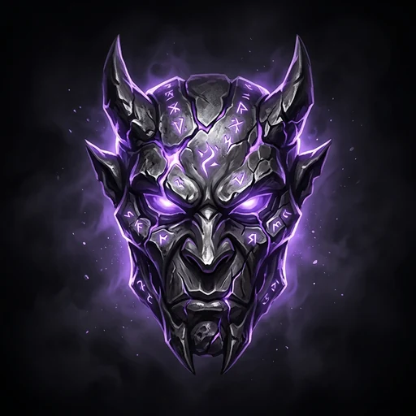
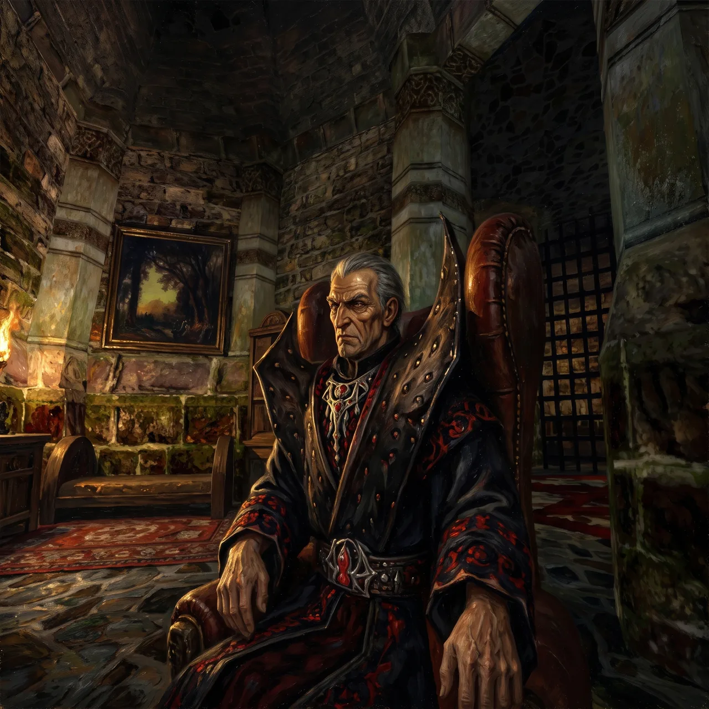
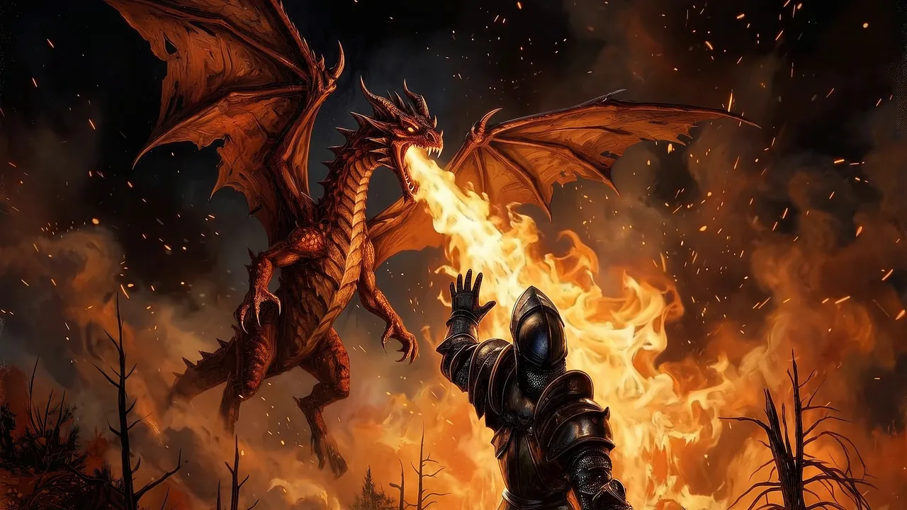
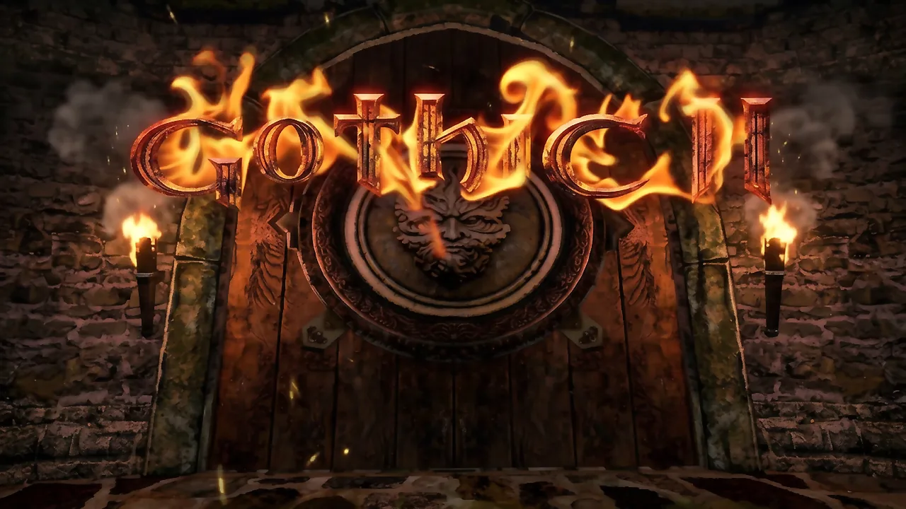
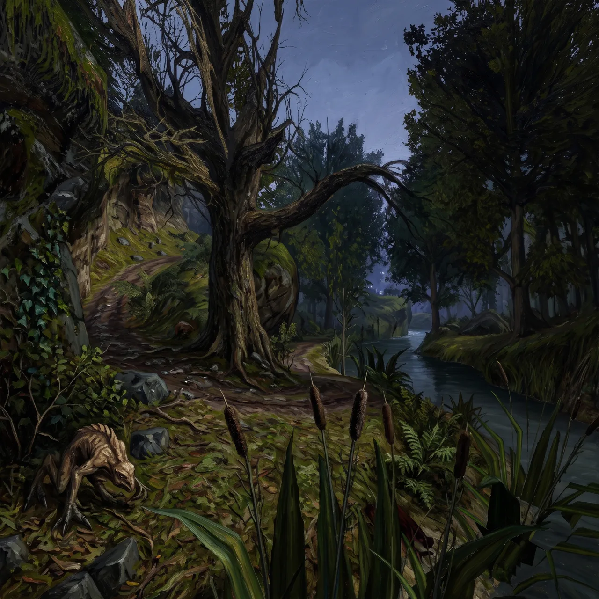
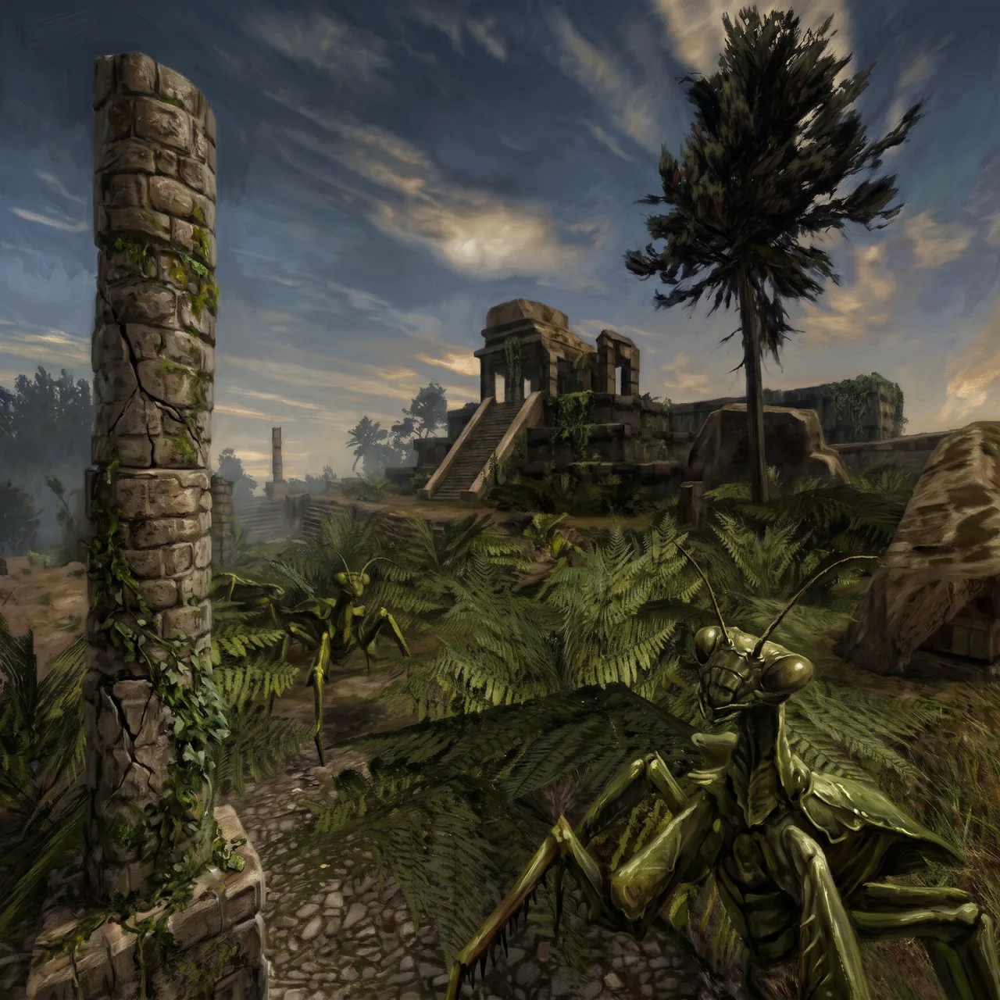
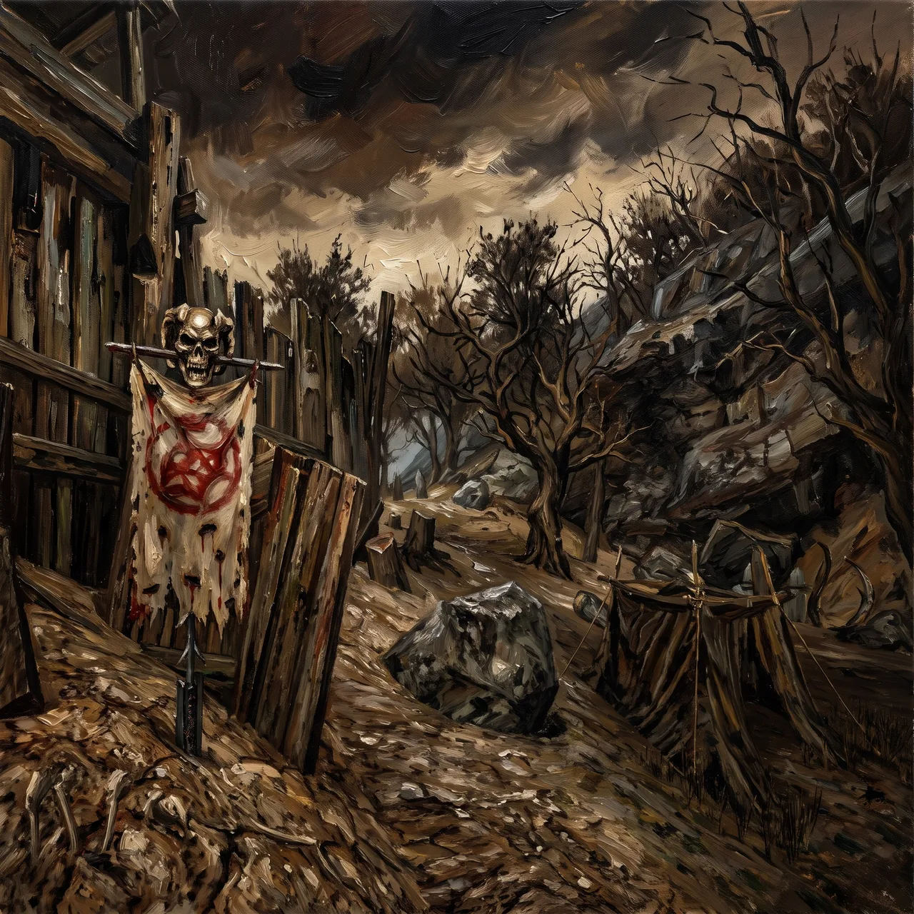

Erlebe Gothic II wie nie zuvor: Vollständige 64-Bit Vulkan-Engine mit Raytracing, ARK-Style Bestien-Zähmung & Reiten, 44 frei wählbare Gameplay-Schalter, 5 Spielstil-Profile und Krushaks finstere Offline-Schattenstimme — jetzt als Community-Alpha spielbar.
Tief im rauen Geist von 2002 verwurzelt, kompromisslos modernisiert und zu 100 % urheberrechtskonform.

Fertige Schlafpfeile an der Werkbank, lege Schattenläufer, Wölfe oder Snapper in den Heilschlaf und nähre sie mit ihrem Lieblingsköder. Gezähmte Kreaturen folgen deinen Befehlen per Jagdhorn, verteidigen dich im Kampf und lassen sich als Reittiere durch Khorinis lenken.

100 % offline und mit 0 ms Latenz: Krushak beobachtet jeden deiner Schritte über native Shared-Memory-Telemetrie. Keine Chat-Illusion und kein externer API-Zwang — 22 handgeschriebene 5-Punkte-Quests und 8 verborgene Geheimnisse fordern deine Skrupellosigkeit in echten 3D-Welt-Taten heraus.

Volle Souveränität über jedes Gameplay-Detail in 6 modularen Kategorien: Kampf & Akrobatik (Nahkampf aus dem Lauf, Fernkampf-Zoom mit RMB & Kopftreffer-Bonus, Tränke & Zauber im Laufen, Sprinten mit Ausdauer, Abroll-Landung, 50 % Pfeil-Rückgewinnung), Beute & Komfort (Quickloot, Beute-Fokus im dichten Gras, Schloss-Gedächtnis für Dietriche, Diebstahl-Warnung, Bonus-freies Lernen ohne LP-Verteuerung, [Tab]-Dialog-Schnelldurchlauf, Mehrfach-Handwerk am Amboss, Rast an Feuern & Bänken) und Lebendige Welt (3-Schichten-Vegetationswind, abendlicher Hafennebel ab 19:00 Uhr, geräumte Nacht-Marktstände ab 20:00 Uhr, Auto-Fackel beim Waffenziehen).
27 meisterhaft ausbalancierte Schilde mit dynamischer Richtungs- und Blockphysik sowie 10 Speere mit erweiterter Stoßreichweite bringen frische taktische Tiefe in das Kampfsystem — nahtlos integriert in Piranha Bytes' raues Original-Trefferfeedback.
Perfekt abgestimmt für jeden Spielertyp: Wähle aus 5 Presets — vom unbarmherzigen 100 % Purist (Original 2003, alle Neuerungen deaktiviert) über Purist+ (sanfter Komfort) und Ausgewogen bis hin zum Feierabend-Zocker (4 konfigurierbare Stufen) mit organischem Learning-by-Doing (Attribut- und Talentsteigerung direkt durch Treffer im Kampf) oder Vollgas (alle 44 Erweiterungen aktiv).
Stabile 60+ FPS in nativem 4K, moderne Schatten- und Beleuchtungseffekte mit Raytracing-Support, geheilte Vanilla-Dialogbugs, nahtlose 2K/4K KI-Texturen mit Kosinus-Blending sowie das neue integrierte Ingame-Bugreporting per Tastendruck auf [F10].
Die Insel Khorinis in noch nie dagewesener visueller Klarheit und technischer Stabilität.

Kapitel 1 im Fokus der Community-Alpha — lebendig, rau und ohne Ruckler.

Alte Maya-Ruinen, Sumpflager und Piraten — vollständig vorbereitet für Vulkan 1.3.

Orkwälle, Drachenfeuer und endlose Schlachten unter moderner 64-Bit-Architektur.
Einfach, isoliert und 100 % urheberrechtskonform. Deine Original-Installation bleibt unangetastet.
Stelle sicher, dass Gothic II: Gold Edition (Die Nacht des Raben) auf Steam oder GOG auf deinem PC installiert ist. Unser Installer greift lediglich auf die Original-Audiodateien und Weltdaten zu.
Lade einfach nacheinander diese 4 Dateien in denselben Ordner (Namen nicht ändern!) und starte danach die .exe:
SmartScreen-Hinweis: Falls Edge bei der neuen .exe warnt: ... → Beibehalten → Mehr anzeigen → Trotzdem beibehalten (beim Start ggf. Weitere Informationen → Trotzdem ausführen).
Starte das Spiel nach dem Setup über den neuen Desktop-/Startmenü-Eintrag oder die GothicLauncher.exe.
Die Engine erkennt deine Gothic-2-Installation automatisch, initialisiert
den Vulkan-Renderer und startet verzögerungsfrei ins Hauptmenü.
Dieses Rework steht auf den Schultern genialer Pioniere, die Gothic über Jahrzehnte lebendig gehalten haben.
Engine-Architektur & Vulkan-Kern
Die revolutionäre Open-Source-Reimplementierung der Gothic-Engine in modernem C++ und Vulkan 1.3.
Schildkampf- & Speer-Kampfanimationen
Schöpfer der legendären Schild- und Speerkampf-Assets, Animationen und dynamischen Block-Physik.
Skript-Bugfixes & Daedalus-Meisterschaft
Grundlegende Korrekturen der Piranha-Bytes-Vanilla-Skripte, Dialog-Fixes und Daedalus-Erweiterungen.
3D-Meshes, Rüstungen & Texturen
Detailverliebte Modellierung neuer Schilde, Rüstungen, Helme und Waffen im unverwechselbaren Gothic-Stil.
Gesichts- & Charakter-Remaster
Hochauflösende, kanonische Gesichts- und Textur-Überarbeitungen aller NPCs der Kolonie und Khorinis.
Das Original-Meisterwerk
Für die unvergessene Welt, die rauen Charaktere und eine Atmosphäre, die ihresgleichen sucht.
Leidenschaft & Feedback
Für über zwei Jahrzehnte unermüdliche Treue, Modding-Tools, Dokumentation und Liebe zur Barriere.
Transparenz, Stabilität und Fakten stehen für uns an erster Stelle.
Wir testen die neuen Kernsysteme (Bestien-Reiten per Jagdhorn, Krushak 2.0 Offline-Flüstern, 44-Schalter-Erweiterungsmenü, Schildkampf und Vulkan-Renderer) zunächst intensiv in Kapitel 1. Über den Ingame-Reporter [F10] kannst du mit einem Tastendruck Feedback und Telemetrie einsenden und das Spiel aktiv mitgestalten.
Nein. Die Modifikation ist und bleibt zu 100 % kostenlos für alle Gothic-Fans. Du musst lediglich das Originalspiel Gothic II: Die Nacht des Raben besitzen.
Nein. Soulbound nutzt eine vollständige Savegame-Isolation in einem separaten Verzeichnis. Deine originalen Gothic-2-Spielstände bleiben vollkommen unberührt.
Nein! Krushaks Schattenstimme und Quest-Generierung läuft über unsere integrierte DarkScriptEngine zu 100 % offline auf deinem PC. Es fließen keinerlei Daten ins Internet und es ist kein API-Key erforderlich.
Ja, absolut. Über das Profil Purist im Menü oder durch Deaktivieren der Schalter im Menü Erweiterungen entspricht das Gameplay zu exakt 100 % dem Vanilla-Original von 2003 — inklusive der originalen Kampfdynamik, aber mit moderner Vulkan-Stabilität.
Windows 10/11 64-Bit, eine Grafikkarte mit nativer Unterstützung für Vulkan 1.3 (NVIDIA GeForce GTX 1060 / AMD Radeon RX 580 oder neuer) sowie ~12 GB freier Festplattenspeicher.